RAG¶
RAG（检索增强生成，Retrieval-Augmented Generation）增强检索知识库是一种结合信息检索与生成式人工智能的技术框架，旨在通过动态调用外部知识库提升大语言模型（LLM）回答的准确性、相关性和时效性。其核心在于将传统检索系统与生成模型结合，解决大模型自身训练数据局限性、知识过时及“幻觉”（虚构信息）等问题。
- 检索（Retrieval） 根据用户问题，从预构建的知识库（如向量数据库）中检索相关文档或信息片段。知识库通常通过离线处理将文本转换为向量表示并建立索引，支持快速相似度匹配。例如，汽车客服系统可能存储车型参数手册作为知识库，检索时匹配用户问题中的关键词或语义。
- 增强（Augmentation） 将检索到的信息整合为上下文，与原始问题一同输入生成模型。这一步骤通过补充外部知识，扩展模型的“记忆”范围，使其能基于最新或专有数据生成回答。例如，医疗诊断场景中，RAG可调用最新医学论文数据辅助生成诊断建议。
- 生成（Generation） 大语言模型结合上下文与问题生成最终回答。通过引入检索到的信息，模型输出的准确性显著提升，同时减少虚构内容。例如，企业客服系统利用内部文档生成合规性解答，避免泄露敏感数据。
1 .知识库创建¶
1.1 选择数据源¶
点击dify 最上方 知识库，点击创建知识库
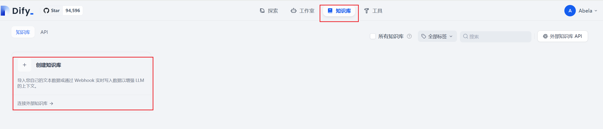
进入知识库创建页面，选择数据源，选择导入已有文本。目前文本支持多种数据类型TXT、 MARKDOWN、 MDX、 PDF、 HTML、 XLSX、 XLS、 DOCX、 CSV、 MD、 HTM
选择好本地文档后，点击下一步。
1.2 分段模式¶
知识库支持两种分段模式：通用模式**与**父子模式。如果你是首次创建知识库，建议选择父子模式。
1.2.1 通用模式¶
系统按照用户自定义的规则将内容拆分为独立的分段。当用户输入问题后，系统自动分析问题中的关键词，并计算关键词与知识库中各内容分段的相关度。根据相关度排序，选取最相关的内容分段并发送给 LLM，辅助其处理与更有效地回答。
在该模式下，你需要根据不同的文档格式或场景要求，参考以下设置项，手动设置文本的**分段规则**。
- 分段标识符，默认值为
\n，即按照文章段落进行分块。 - 分段最大长度，指定分段内的文本字符数最大上限，超出该长度时将强制分段。默认值为 500 Tokens，分段长度的最大上限为 4000 Tokens；
- 分段重叠长度，指的是在对数据进行分段时，段与段之间存在一定的重叠部分。这种重叠可以帮助提高信息的保留和分析的准确性，提升召回效果。建议设置为分段长度 Tokens 数的 10-25%；
文本预处理规则， 过滤知识库内部分无意义的内容。提供以下选项：
- 替换连续的空格、换行符和制表符
- 删除所有 URL 和电子邮件地址
配置完成后，点击“预览区块”即可查看分段后的效果。你可以直观的看到每个区块的字符数。如果重新修改了分段规则，需要重新点击按钮以查看新的内容分段。
1.2.2 父子模式¶
与**通用模式**相比，父子模式采用双层分段结构来平衡检索的精确度和上下文信息,让精准匹配与全面的上下文信息二者兼得。
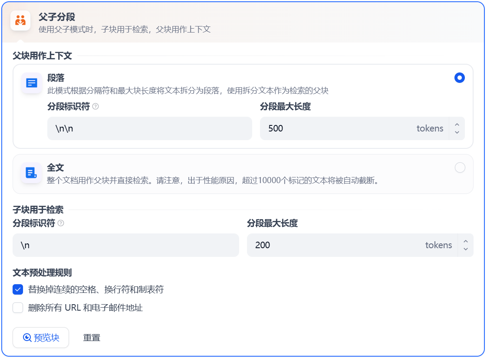
其中，父区块（Parent-chunk）保持较大的文本单位（如段落），提供丰富的上下文信息；子区块（Child-chunk）则是较小的文本单位（如句子），用于精确检索。系统首先通过子区块进行精确检索以确保相关性，然后获取对应的父区块来补充上下文信息，从而在生成响应时既保证准确性又能提供完整的背景信息。你可以通过设置分隔符和最大长度来自定义父子区块的分段方式。
例如在 AI 智能客服场景下，用户输入的问题将定位至解决方案文档内某个具体的句子，随后将该句子所在的段落或章节，联同发送至 LLM，补全该问题的完整背景信息，给出更加精准的回答。
- 子分段匹配查询：
- 将文档拆分为较小、集中的信息单元（例如一句话），更加精准的匹配用户所输入的问题。
- 子分段能快速提供与用户需求最相关的初步结果。
- 父分段提供上下文：
- 将包含匹配子分段的更大部分（如段落、章节甚至整个文档）视作父分段并提供给大语言模型（LLM）。
- 父分段能为 LLM 提供完整的背景信息，避免遗漏重要细节，帮助 LLM 输出更贴合知识库内容的回答。
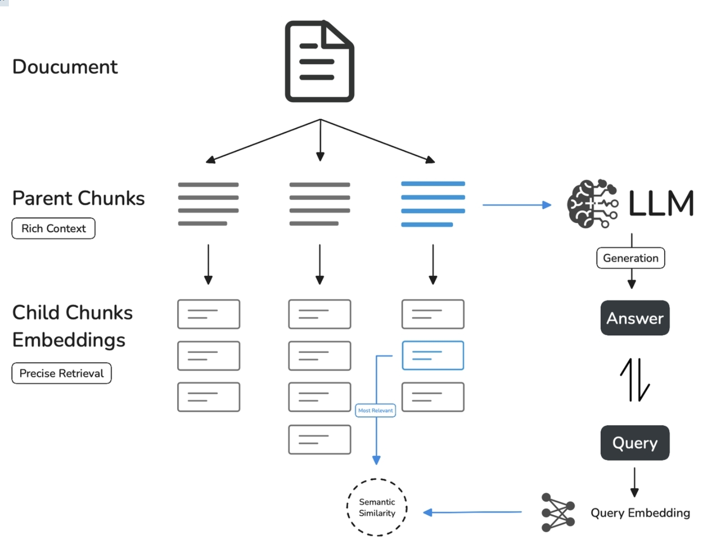
1.3 索引方法¶
如搜索引擎通过高效的索引算法匹配与用户问题最相关的网页内容，索引方式是否合理将直接影响 LLM 对知识库内容的检索效率以及回答的准确性。Dify提供“高质量”**与”**经济“ 两种索引方法。
1.3.1 经济模式¶
在经济模式下，每个区块内使用 10 个关键词进行检索，降低了准确度但无需产生费用。对于检索到的区块，仅提供倒排索引方式选择最相关的区块。
1.3.2 高质量索引¶
在高质量模式下，使用 Embedding 嵌入模型将已分段的文本块转换为数字向量，帮助更加有效地压缩与存储大量文本信息；使得用户问题与文本之间的匹配能够更加精准。
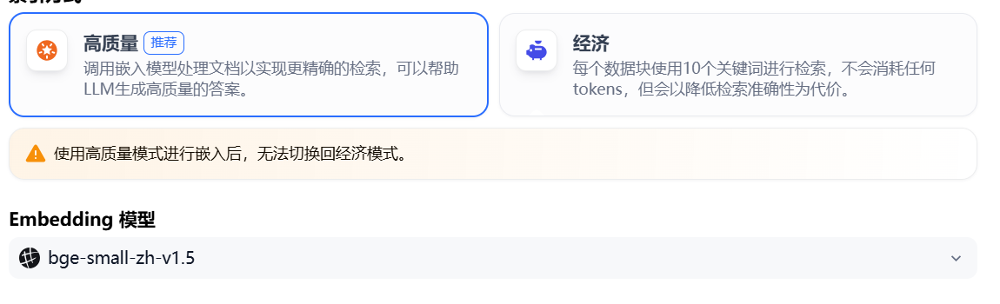
将内容块向量化并录入至数据库后，需要通过有效的检索方式调取与用户问题相匹配的内容块。高质量模式提供向量检索、全文检索和混合检索三种检索设置。
1.4 检索方法¶
知识库在接收到用户查询问题后，按照预设的检索方式在已有的文档内查找相关内容，提取出高度相关的信息片段供语言模型生成高质量答案。这将决定 LLM 所能获取的背景信息，从而影响生成结果的准确性和可信度。
常见的检索方式包括基于向量相似度的语义检索，以及基于关键词的精准匹配：前者将文本内容块和问题查询转化为向量，通过计算向量相似度匹配更深层次的语义关联；后者通过倒排索引，即搜索引擎常用的检索方法，匹配问题与关键内容。
1.4.1 经济索引¶
在经济索引方式下，仅提供**倒排索引方式**。这是一种用于快速检索文档中关键词的索引结构，常用于在线搜索引擎。倒排索引仅支持 TopK 设置项。用于筛选与用户问题相似度最高的文本片段。系统同时会根据选用模型上下文窗口大小动态调整片段数量。系统默认值为 3 。数值越高，预期被召回的文本分段数量越多。
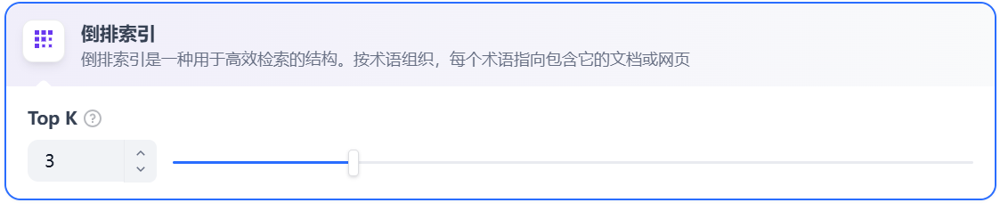
1.4.2 高质量索引¶
在高质量索引方式下，Dify 提供向量检索、全文检索与混合检索设置：
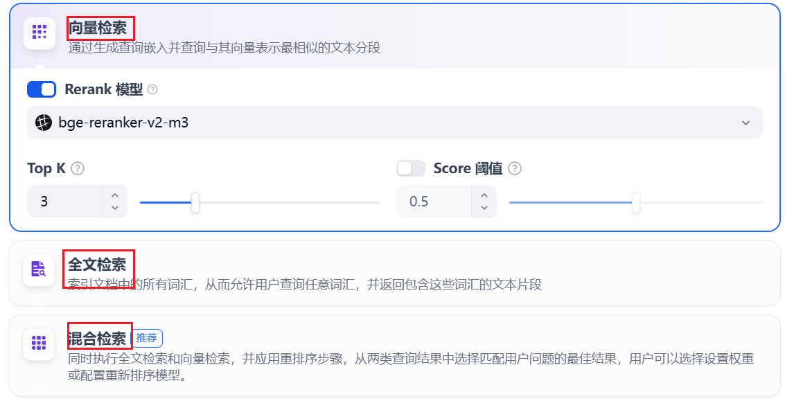
向量检索
向量化用户输入的问题并生成查询文本的数学向量，比较查询向量与知识库内对应的文本向量间的距离，寻找相邻的分段内容。
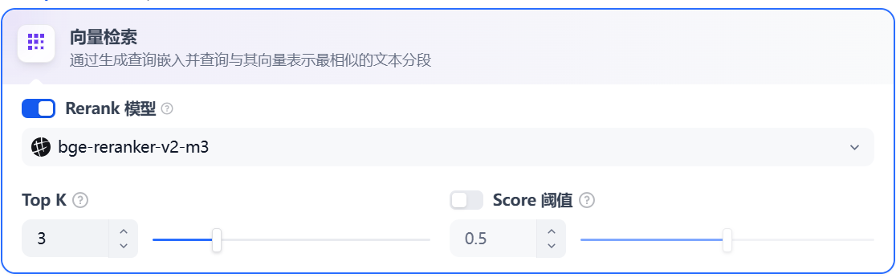
Rerank 模型： 默认关闭。开启后将使用第三方 Rerank 模型再一次重排序由向量检索召回的内容分段，以优化排序结果。帮助 LLM 获取更加精确的内容，辅助其提升输出的质量。开启该选项前，需前往“设置” → “模型供应商”，提前配置 Rerank 模型的 API 秘钥。
TopK： 用于筛选与用户问题相似度最高的文本片段。系统同时会根据选用模型上下文窗口大小动态调整片段数量。默认值为 3，数值越高，预期被召回的文本分段数量越多。
Score 阈值： 用于设置文本片段筛选的相似度阈值，只召回超过设置分数的文本片段，默认值为 0.5。数值越高说明对于文本与问题要求的相似度越高，预期被召回的文本数量也越少。
TopK 和 Score 设置仅在 Rerank 步骤生效，因此需要添加并开启 Rerank 模型才能应用两者中的设置参数。
全文检索
关键词检索，即索引文档中的所有词汇。用户输入问题后，通过明文关键词匹配知识库内对应的文本片段，返回符合关键词的文本片段；类似搜索引擎中的明文检索。
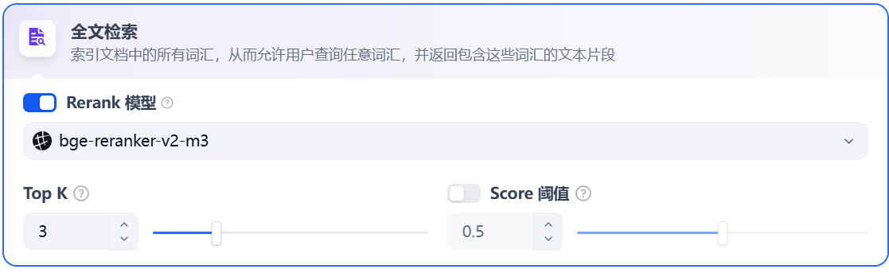
参数设置与向量检索一致。
混合检索：同时执行全文检索和向量检索，或 Rerank 模型，从查询结果中选择匹配用户问题的最佳结果。
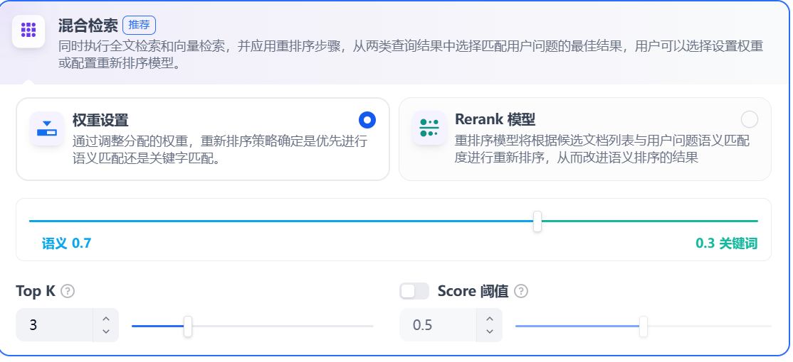
在混合检索设置内可以选择启用 “权重设置” 或 “Rerank 模型”。
1.5 知识库¶
1.5.1 知识库效果¶
当画面出现嵌入完成，表示文档向量化完成。
1.5.2 分段效果¶
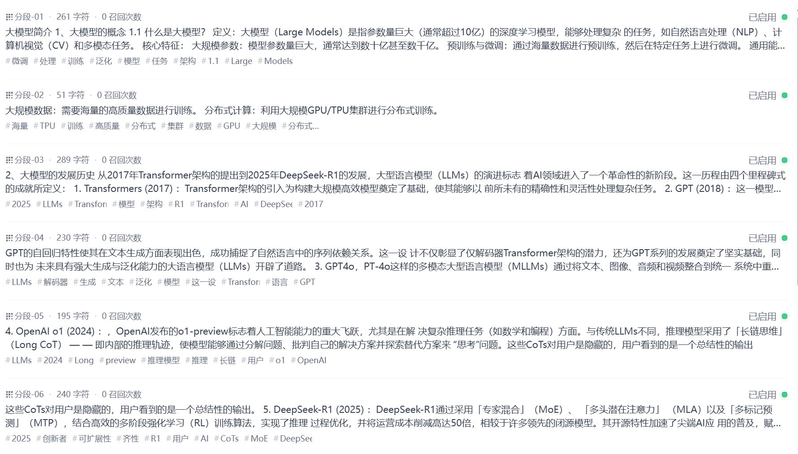
1.5.3 召回测试¶
Dify 知识库内提供了文本召回测试的功能，用于模拟用户输入关键词后调用知识库内容区块。召回的区块将按照分数高低进行排序并发送至 LLM。一般而言，问题与内容块的匹配度越高，LLM 所输出的答案也就更加贴近源文档，文本“训练效果”越好。
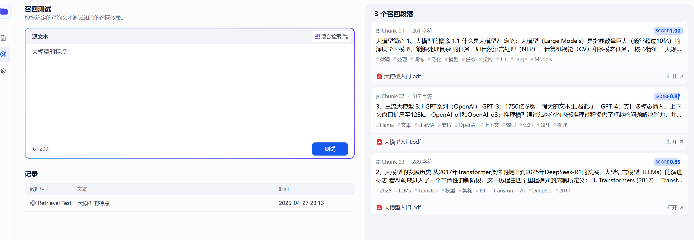
4 .AI Agent知识库¶
点击创建空白页面、选择Agent ,给这个Agent 应用一个名字
进入AI Agent画面，再上下文添加已创建好的知识库。
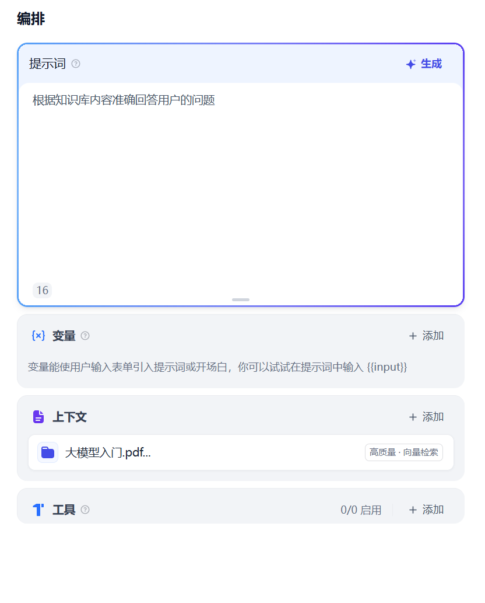
多模型调试
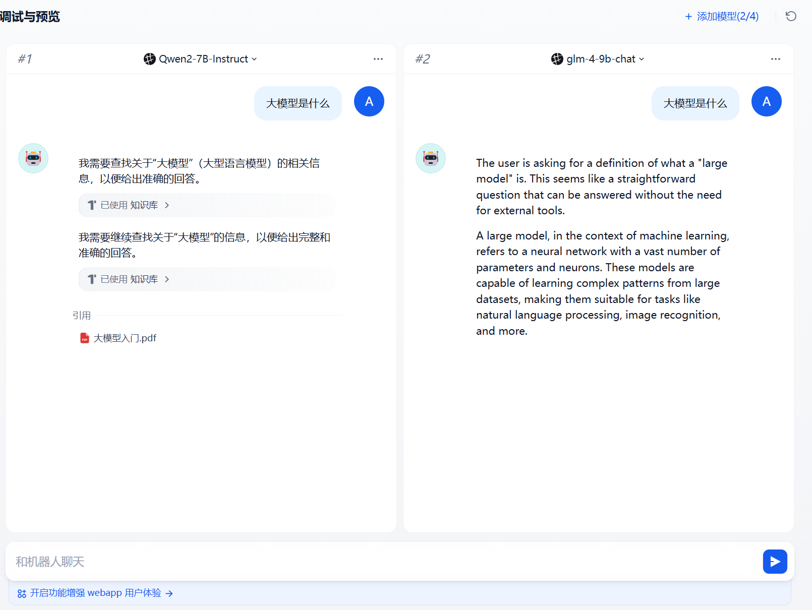
添加完成知识库我们就可以针对这个知识库进行聊天和对话了。
5 .知识库工作流¶
5.1 创建工作流¶
点击创建空白页面、选择chatflow ,给这个chatflow 应用一个名字
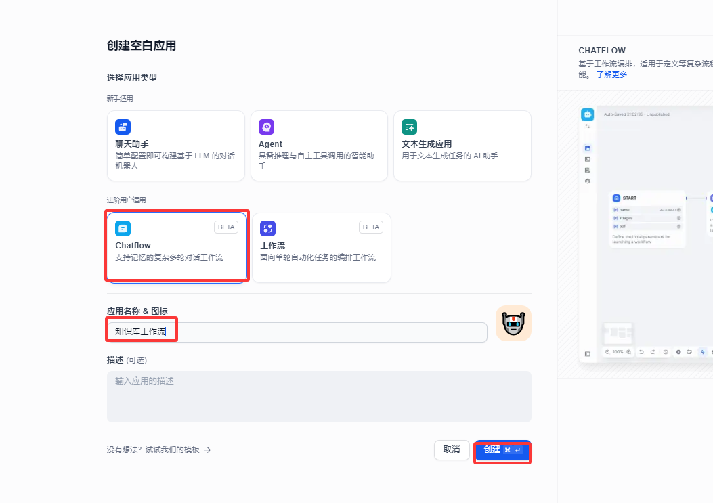
5.2 添加知识库¶
进入工作流创造面板中，我们可以在大语言模型中间节点中添加“知识检索”
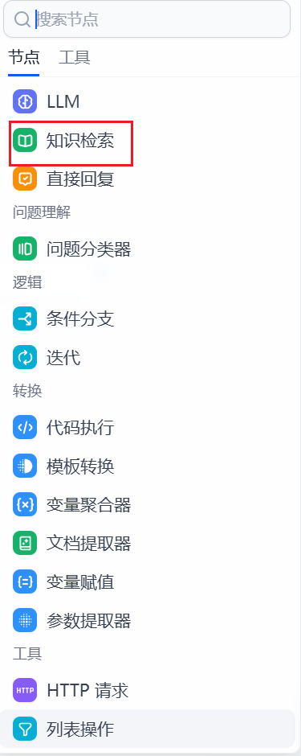
打开知识检索，我们点击知识库添加引用的知识库
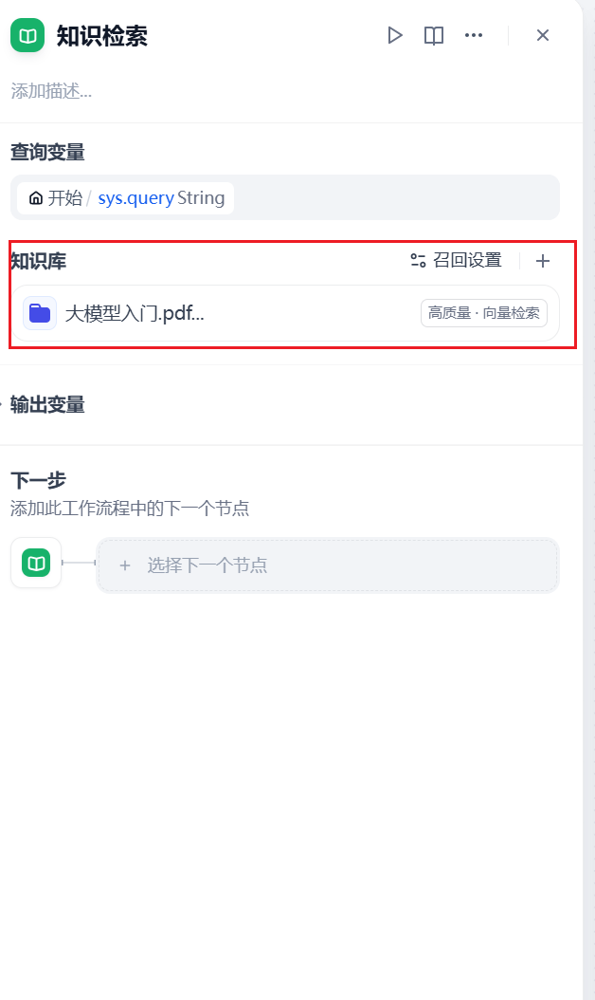
5.3 添加LLM节点¶
添加完成知识库，我们对接llm大语言模型
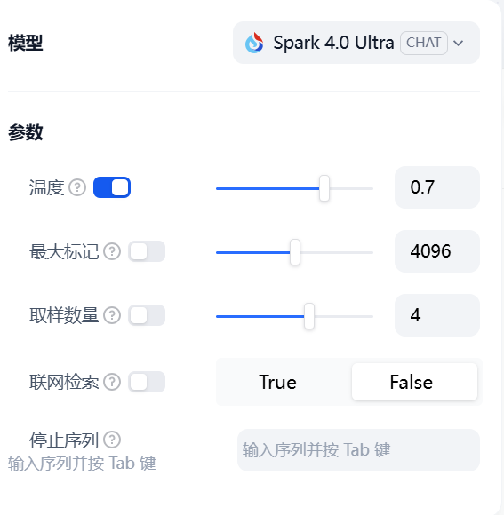
上下文 我们选择 知识检索 result
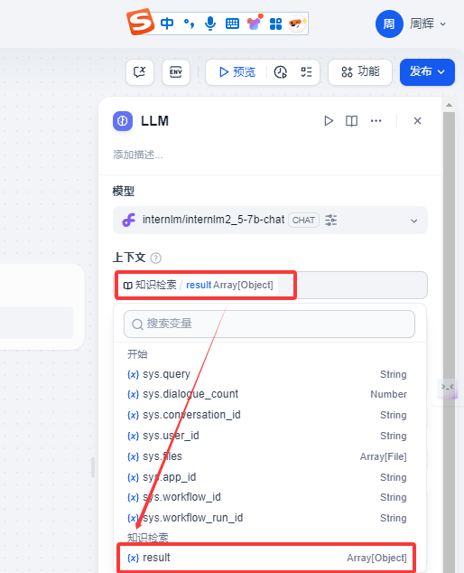
系统提示词这里我们输入如下提示词
请根据文本内容{{#context#}}回答
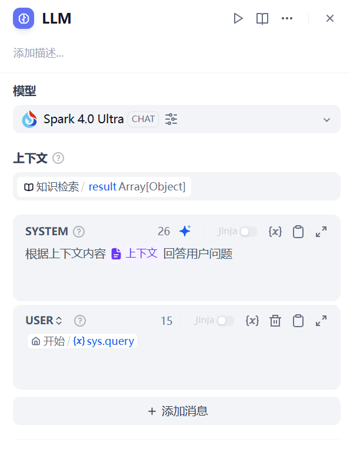
其他设置都可以默认。
5.4 直接回复¶
添加直接回复节点
5.5 工作流测试¶
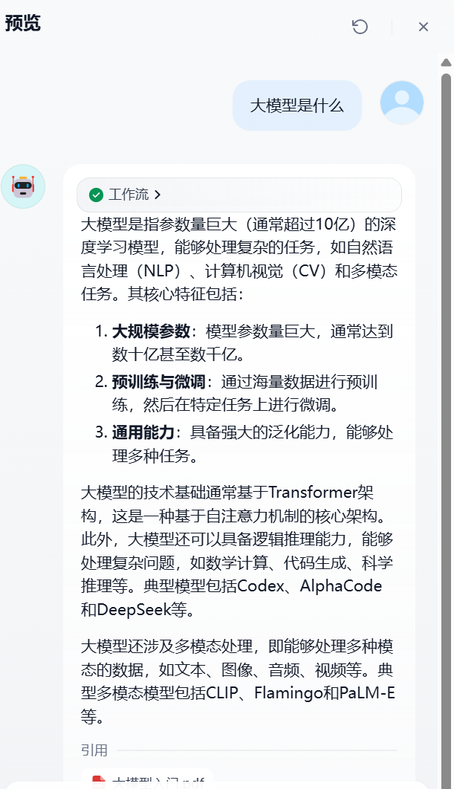